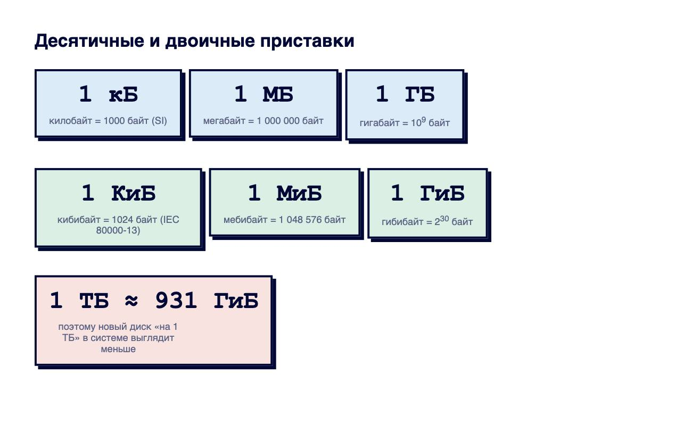

Справочник «Стандарты и сертификаты» · тема 3
Глава 9
Коды стран, валют, языков
и единицы величин
Страну, валюту, язык, номер телефона и размер файла в программах записывают по стандартам. Тогда данные из разных систем совпадают без ручной сверки. В главе разобраны коды ISO, формат телефонного номера E.164 и правила записи единиц величин.
- Документы
- ISO 3166-1 · ISO 4217 · ISO 639 · BCP 47 (RFC 5646) · ITU-T E.164 · ГОСТ 8.417-2002 · IEC 80000-13
- Уровень
- Базовый
- Где встречается
- Формы, базы данных, платежи, интерфейс на нескольких языках
- Зачем это знать
- Чтобы хранить такие данные однозначно
§1Страны и валюты
| Страна | ISO 3166-1 alpha-2 | alpha-3 | цифровой | Валюта ISO 4217 | цифровой |
|---|---|---|---|---|---|
| Россия | RU | RUS | 643 | RUB | 643 |
| Казахстан | KZ | KAZ | 398 | KZT | 398 |
| Беларусь | BY | BLR | 112 | BYN | 933 |
| США | US | USA | 840 | USD | 840 |
| Германия | DE | DEU | 276 | EUR | 978 |
Буквенный код валюты обычно складывается из кода страны и первой буквы названия валюты: RU + B (рубль). У евро код EUR, у Германии своей валюты нет. Названия стран меняются, коды — редко, поэтому в базе хранят код, а название показывают по нему.
Хранение страны и суммы
order = {
'country': 'Россия',
'amount': 1490.9,
'currency': 'руб.',
}order = {
'country': 'RU',
'amount': '1490.90', # строкой или Decimal
'currency': 'RUB',
}Справа код страны и валюты понятен любой системе. Сумму не хранят в float: 0.1 + 0.2 в нём не равно 0.3. Используют Decimal или целое число копеек.

§2Языки и локали
Язык обозначают двухбуквенным кодом ISO 639-1: ru, en, kk. Язык вместе с регионом — тегом по BCP 47 (RFC 5646): ru-RU, en-US, en-GB. Регион пишут прописными буквами, язык — строчными.
<html lang="ru"> Accept-Language: ru-RU,ru;q=0.9,en;q=0.8
От локали зависит запись чисел и дат: в ru-RU — 1 490,90 и 07.10.2026, в en-US — 1,490.90 и 10/7/2026. Поэтому в хранилище и при обмене пишут нейтрально (1490.90, 2026-10-07), а локаль применяют только при показе человеку.
§3Телефонные номера, E.164
Рекомендация МСЭ-T E.164 задаёт международный формат номера: знак плюс, код страны и национальный номер, всего не больше 15 цифр, без пробелов и скобок.
Хранение телефона
phones = ['8 (916) 123-45-67', '+7 916 1234567', '9161234567']
phones = ['+79161234567', '+79161234567', '+79161234567']
Слева три записи одного номера: поиск и проверка на повтор не сработают. Справа номер приведён к E.164, а пробелы и скобки добавляются только при показе.
import phonenumbers
n = phonenumbers.parse('8 (916) 123-45-67', 'RU')
print(phonenumbers.format_number(n, phonenumbers.PhoneNumberFormat.E164))
# +79161234567§4Единицы величин и запись чисел
В России единицы величин записывают по ГОСТ 8.417-2002, он основан на Международной системе единиц SI. Число и обозначение единицы разделяют пробелом, после обозначения точку не ставят.
| Правильно | Неправильно | Правило |
|---|---|---|
| 5 км | 5км · 5 км. | пробел перед единицей, без точки |
| 20 °C | 20°C · 20 град. | пробел перед °C |
| 15 % | 15% | по ГОСТ 8.417 перед знаком процента ставят пробел |
| 30° | 30 ° | градус плоского угла пишут слитно |
| 2 ч 15 мин | 2 час. 15 мин. | ч, мин, с — без точек |
| 1 500 000 | 1,500,000 · 1.500.000 | разряды в русском тексте — пробелом |

По IEC 80000-13 приставка «кило» означает 1000 и в информатике: 1 кБ = 1000 байт. Для 1024 байт введены двоичные приставки: 1 КиБ (KiB) = 1024 байт, 1 МиБ = 1 048 576 байт. Поэтому диск «на 1 ТБ» в системе показывается как 931 ГиБ.
size = 1_148_896 # байт, из журнала веб-сервера print(size / 1000**2) # 1.148896 -> 1,15 МБ print(size / 1024**2) # 1.0956... -> 1,10 МиБ
§5Частые ошибки
§6Проверьте себя
- Какие коды у России по ISO 3166-1 и у рубля по ISO 4217?
- Чем тег ru-RU отличается от кода ru?
- Как записать номер 8 (916) 123-45-67 по E.164?
- Как по ГОСТ 8.417 записать «пять километров» и «двадцать градусов Цельсия»?
- Сколько байт в 1 кБ и в 1 КиБ?
RU · RUS · 643RUB · USD · EURru-RU — BCP 47+7… — E.1645 км — пробелбез точки после единицы15 % по ГОСТ 8.4171 500 000кБ = 1000КиБ = 1024IEC 80000-131 ТБ ≈ 931 ГиБСправочник «Стандарты и сертификаты» · глава 9Макаров Максим Николаевич